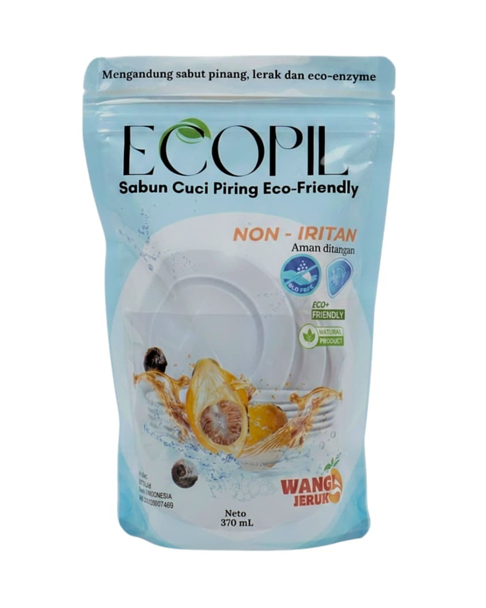
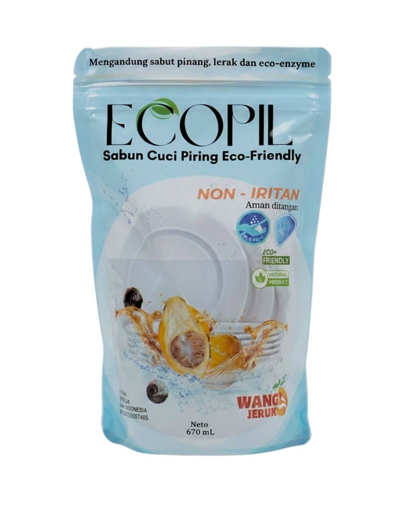

Hadir sebagai solusi sabun cuci piring ramah lingkungan yang aman untuk kulit sensitif. Terbuat dari limbah sabut pinang, buah lerak, dan eco enzyme tanpa SLS/SLES. Efektif membersihkan noda tanpa merusak lingkungan.


Dilatarbelakangi dari usaha kami untuk terus memberikan dampak positif bagi lingkungan melalui pemanfaatan dan pengolahan limbah menjadi produk sabun cuci piring yang ramah kulit sensitif.
ECOPIL memiliki tujuan yang tidak hanya berfokus dalam menciptakan bisnis untuk mendapatkan keuntungan, namun juga memiliki visi dan misi yang kuat terhadap lingkungan dan masyarakat sehingga dapat berkontribusi dalam pembangunan berkelanjutan (Sustainable Development Goals).
Dibuat dari bahan-bahan alami yaitu limbah sabut pinang, lerak, dan eco enzyme tanpa mengandung bahan kimia berbahaya bagi ekosistem.
Formula non-SLS tanpa pewarna & pewangi buatan sehingga lembut di tangan tanpa menyebabkan iritasi.
Diperkaya eco-enzyme yang ampuh membersihkan lemak dan noda membandel dengan aktif dan maksimal tanpa residu licin.
Mudah dibilas & nyaman di tangan serta turut berperan dalam penghematan air.
Turut serta mendukung keberlanjutan dan memberdayakan petani lokal melalui penggunaan sabun cuci piring dari limbah.

Ukuran hemat, pas untuk keluarga kecil. Formula tanpa SLS, aman untuk kulit sensitif.

Membersihkan lebih banyak, tetap ramah lingkungan. Cocok untuk pemakaian harian.

Lebih hemat dan praktis. Solusi tepat untuk isi ulang sekaligus mengurangi sampah botol plastik.

Ukuran isi ulang terbesar kami. Pilihan paling ekonomis untuk kebutuhan cuci piring keluarga Anda.
Kebanggaan kami saat memperkenalkan sabun cuci piring ramah lingkungan langsung kepada masyarakat.

Pengunjung pameran antusias mencoba dan membawa pulang produk ECOPIL.

Kemasan praktis dengan pompa (pump), nyaman digunakan sehari-hari.
Cari tahu fakta menarik seputar kebiasaan mencuci dan dampaknya bagi kesehatan serta lingkungan.

Banyak dari kita yang meyakini mitos lama bahwa semakin banyak busa, semakin bersih piring kita[cite: 1]. Faktanya, busa hanyalah efek samping dari zat kimia surfaktan, dan melimpahnya busa sama sekali tidak menentukan daya bersih sebuah sabun[cite: 1].
Penggunaan busa berlebih justru memicu pemborosan air, merusak ekosistem air akibat zat kimia sintetis seperti SLS, serta memicu iritasi kulit[cite: 1]. ECOPIL hadir dengan formula alami rendah busa yang aman dan efektif[cite: 1]!

Yuk, terapkan panduan mencuci yang tepat di bawah ini[cite: 1]!
"Aku dan anak termasuk orang yang alergi jika pakai produk yang tidak cocok. Namun itu tidak pernah terjadi semenjak kami kenal ECOPIL. ECOPIL sangat cocok untuk kulit sensitif kami"
"Saya memiliki tangan yang sensitif tiap cuci piring. Sering sekali kulit saya gatal hingga iritasi. Namun semenjak mengenal ecopil Alhamdulillah tangan saya tidak pernah iritasi lagi karena sabunnya lembut di tangan dan tetap ampuh membersihkan."
"Saya berulang kali order karena saya suka produknya. Menurut saya keunggulan ECOPIL adalah sangat hemat air karena sabunnya rendah busa dan tidak meninggalkan residu setelah dibilas"
"Sabunnya enak di tangan, wangi, kesat, tidak membuat tangan kering, busanya juga tidak terlalu banyak. Overall suka sekali dengan produknya"
Jalan Sunan Bonang No.54, RT.18/RW.5, Simpang III Sipin, Kota Baru, Jambi
09.00 – 17.00 WIB (Senin - Sabtu)